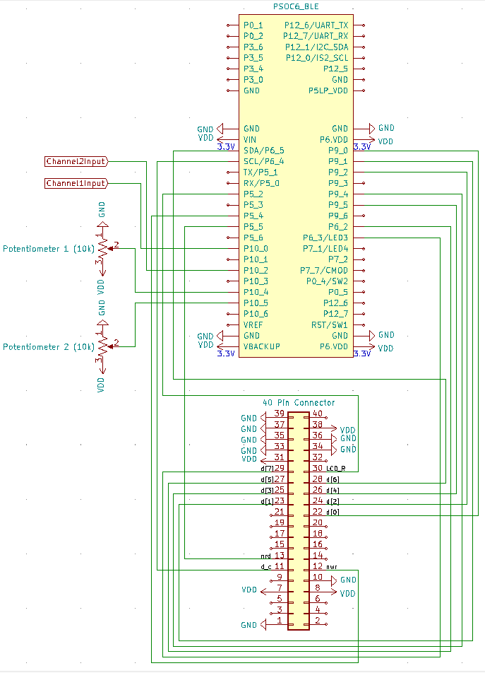
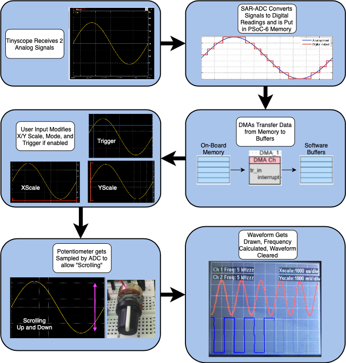
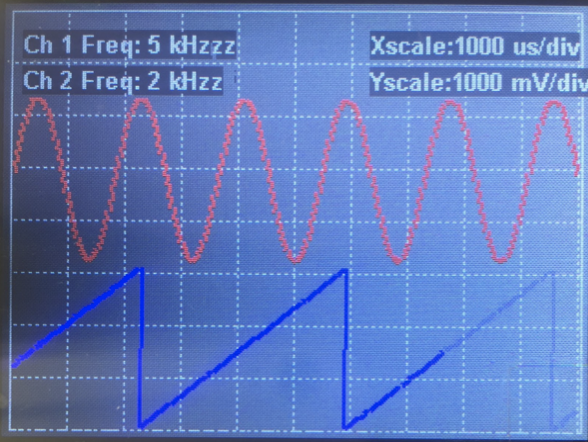

TinyScope FlowChart:

TinyScope Overview:


The "Tinyscope" dual-channel oscilloscope that I designed for my Embedded System Design class at UCSC.
The Tinyscope is made from a PSoC-6 microcontroller programmed and compiled in the PSoC Creator (ver 4.4) that holds similar features as a standard osilliscope would.
An oscilloscope is a type of electronic test equipment that allows the user to probe analog signals and plot them as digital signals in units of voltages over time.
Oscilloscopes are useful as they assist in finding the amplitude, frequency, distortion, and other characteristics of signals.
The Tinyscope allows all this information to be found for a limited range of voltages at a fraction of the size and cost of a standard oscilloscope.

